What's the difference between full-cup, 3/4-cup, and 1/2-cup bras? (Plus: is the upper cup edge "open" or "closed"?)
Translator's note: the key technical distinction here is coverage vs. volume — full/3/4/1/2 describe how much chest the cup covers, not cup size — and the concept of the upper cup edge (컵 상변) being open or closed when viewed from the side, which predicts fit better than coverage class. The wear-failure analysis (vertical wire pressing tissue, floating gore, loose band shifting the bra's center of gravity forward) is excellent fit diagnosis.
Today, while browsing bra forums, I came across a post that said: "Regular bras are too small for me, so I tried a full cup — but the full cup overflows too." What does that even mean? Was this someone with a large bust who expected a full cup to minimize? The comments underneath were equally baffled. Could there be a meaning of "full cup" I'm not aware of? That question is why I'm writing this post.
A "full cup" is not the same thing as a cup that's full — i.e., a cup you've maxed out. This confusion comes up constantly, probably because large-busted women tend to reach for full cups, leading many people to associate "full cup" with "big bust." That's not what it means. In Korea, almost nothing except 3/4-cup bras is produced or sold, so it's completely understandable if you've never encountered the term clearly defined. Let me explain.
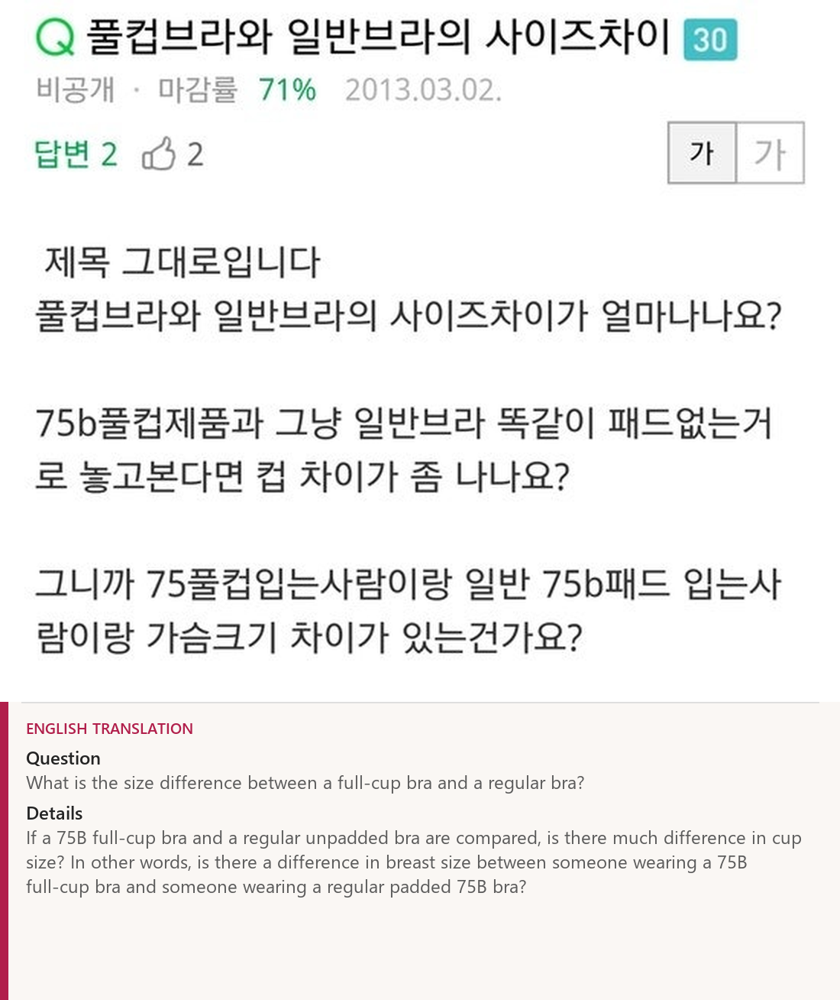
Classified by how much the cup covers: three types
※ BP = Bust Point, the nipple point.
▼ The most universal: the ¾-cup bra
Nine out of ten bras on sale fall into this category. Not only in Korea — it's a very common design in Japan, the US, everywhere. I'll explain why below.
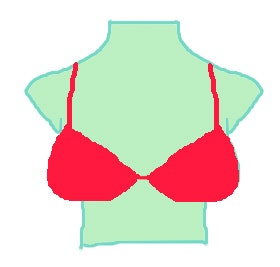
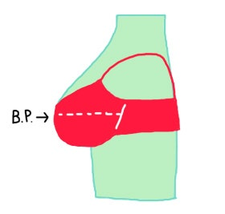
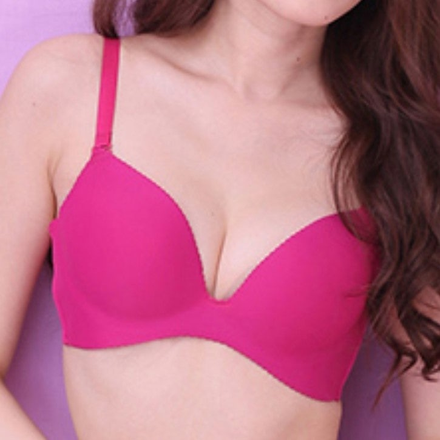
▼ Often used strapless: the ½-cup bra
Also called a half-cup. The cup is not smaller than your size — the design intent itself is to bare the upper chest! Seen from the side, the cup and band are almost in a straight line, so it looks natural even with the straps detached, and the upper cup edge doesn't peek out of off-shoulder tops. That's why strapless bras usually come as 1/2 cups. To support the bust without straps, a U-shaped wire is often used. Still, since it can't hold the upper chest, stability and corrective power are somewhat lower.

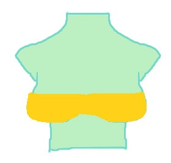
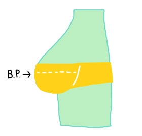
▼ Finally: the full cup
A full cup is a cup that covers the entire bust. It is not made larger than your size — its design purpose is to enclose everything up to the upper chest. Take the full cup as the base: cut away ¼ and you get a ¾ cup; cut away half and you get a ½ cup.

In other words, the difference between a full-cup bra and a ¾- or ½-cup bra is how much the cup covers — the size applies identically.
Put the three side by side and the difference is "how much of the upper chest is covered." A ½ cup barely covers the upper chest; a full cup covers it almost perfectly.
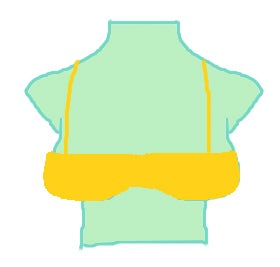

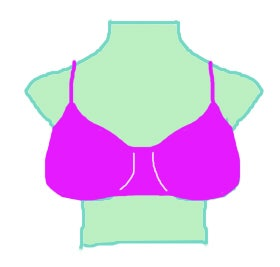


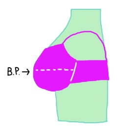
Upper-bust-full figures in full cups
When someone with a lot of upper-bust fullness wears a full cup, the breast can pop out above the cup and create a "quad boob." So "regular bras are too small, so I should wear a full cup" makes no sense — it will overflow even more violently... If a regular ¾-cup 75C feels tight, just wear a 75D.
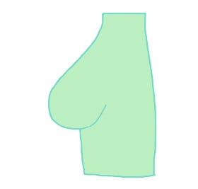
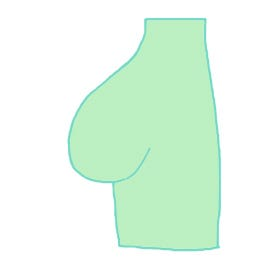
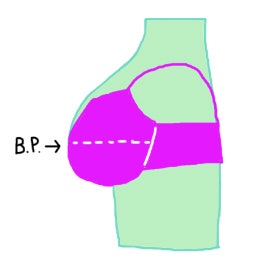
Upper-bust-low figures in full cups
If you have little upper-bust fullness, a full cup is usually better — it covers the top of the breast, so the BP never peeks out.

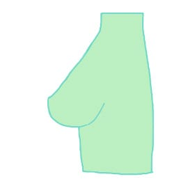
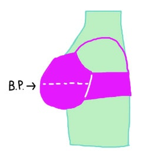
cf) But when choosing by upper-bust volume, what matters more than "how much the cup covers" is what shape the cup is. Lots of upper bust → a cup with an open upper edge (상변이 열린컵); little upper bust → a cup with a closed upper edge (상변이 닫힌 컵).
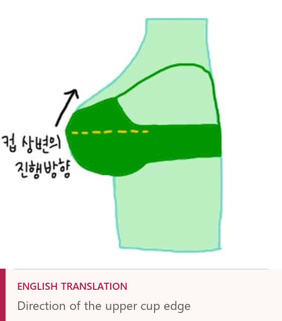
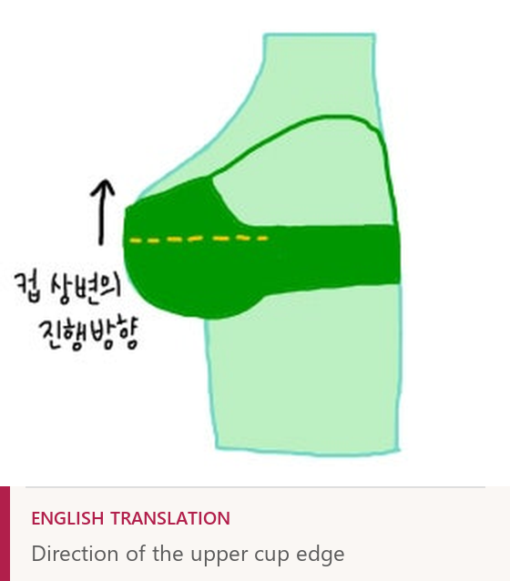
Whether the cup is "closed" or "open" can be read from the direction the top of the cup travels when you look at it from the side. Even a full cup counts as open if the upper edge runs vertically — and people with lots of upper bust can wear it. The Exabrace Medi and Wakibra Original, for example, are classified as full cups because their cup sides are high, but the straps sit close to the armpit and the upper edge toward the center of the cup is open. (From a neighbor who's worn Exabrace, Wakibra, and Mode Marie: the cups close in the order Exabrace Crescendo > Exabrace Grand > Exabrace Medi > Wakibra > Mode Marie — Crescendo covers the upper chest more; Mode Marie's top is more open.)
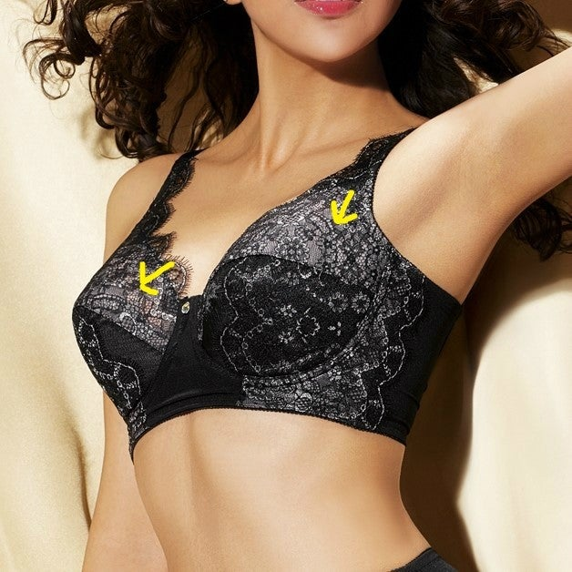
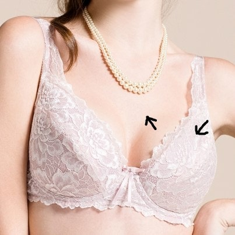
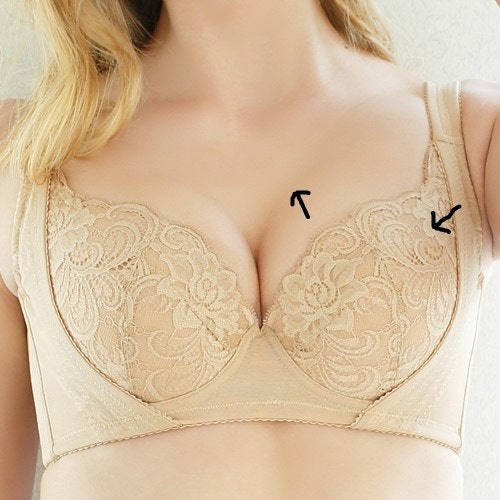
Conversely, some ¾ cups have a blocked (closed) upper edge — with lots of upper bust, the breast would get pressed at the cup's edge. And although I said full cups suit low-upper-bust figures, in practice half cups are often made with closed upper edges too, to protect the bust when straps come off — which is why many low-upper-bust women wear half cups.

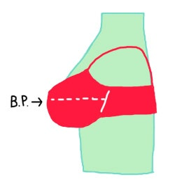
A full cup's wide coverage prevents bounce for larger busts and holds almost any breast shape firmly, which is why many corrective bras are full cups. But both half and full cups constrain shape somewhat — and a full cup can look dowdy in a way a 3/4 cup doesn't. The 3/4 cup splits the difference: it suits most breast shapes, offers decent correction, and is simply the most versatile design. There's also a hybrid: a 3/4-cup molded-sponge base with a thin single fabric layer added across the top — a bit more stability, still forgiving of breast shape. I personally prefer that one.
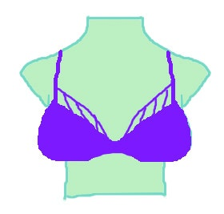
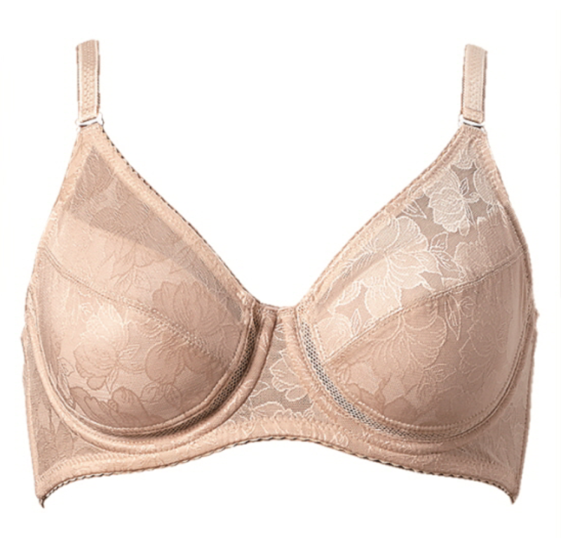
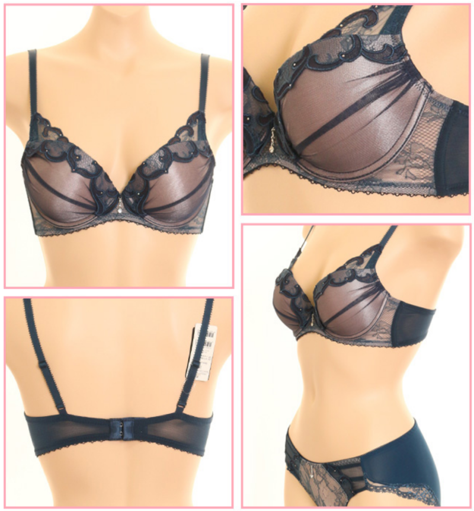
The wrong way to wear a full cup
Because so many people are used to 3/4 cups, some wear full cups with a ¾-cup-style fit. This is a very wrong example: the cup's apex point (yellow dashed line) doesn't line up with your Bust Point (white dashed line), and the wire (yellow solid line) goes vertical, pressing the side of the breast — which can lead to breast tissue migration (가슴 퍼짐) or circulation problems.
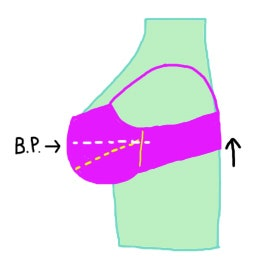
Because the bra feels uncomfortable this way, people's instinct is to go up a band size instead of a cup size. "75B feels tight — but a C seems too big, so I'll try 80B." In fact 75C and 80B are sister sizes with almost identical cup volume; the only difference is shape — 80B spreads the same volume over a wider, shallower frame. Going to 80B solves the tightness but worsens the fit problem.
When the band is loose, the back rides up, and the bra's center of gravity tips forward. The bra then does nothing at all to prevent sagging. You'd think nobody wears one this way? Search the internet for a bit and you'll see tons — even, unbelievably, product detail-page images from lingerie shops. In one, the cup is obviously a full cup (it says so in the product name), but the band is riding up to the shoulder blades, the cup isn't enclosing the whole breast, and the bra's center is floating so the wire presses into the breast tissue. The model appears to be wearing a cup far too small and a band far too long for her frame.
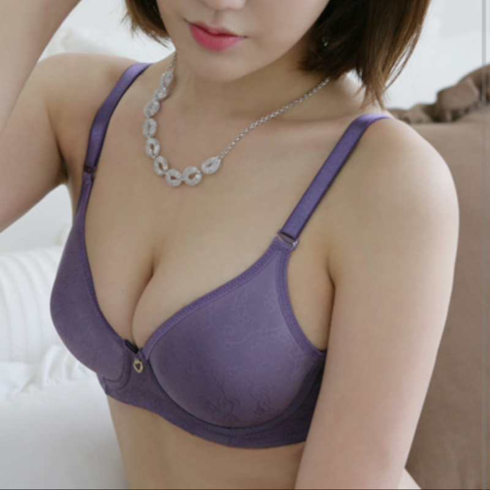
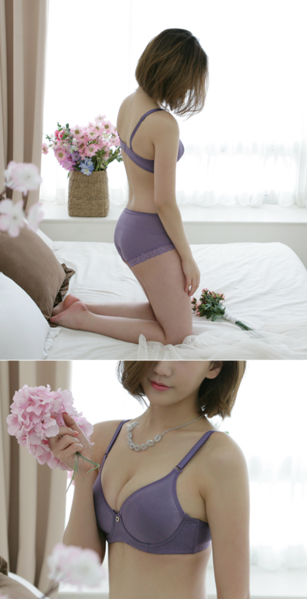
Full cups often have a higher wire for more effective correction — but with a high gore, the wire must not press the breast like that.
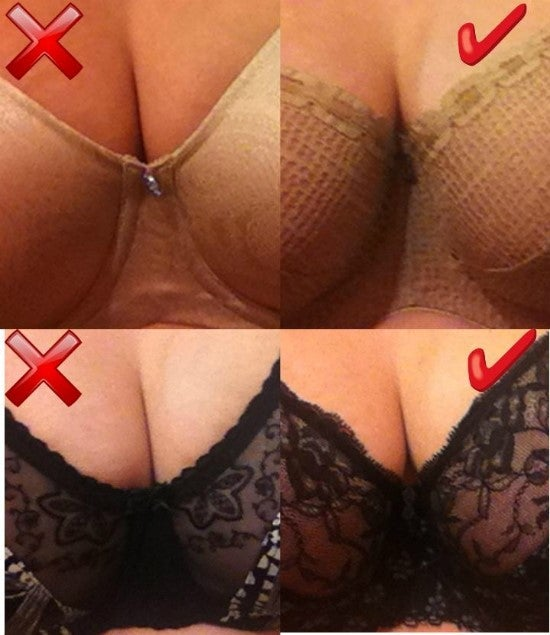
Correct full-cup wear
Of course, even a full cup can produce cleavage if the gore (the bra's center) is low. Low-center + full-cup bras are increasingly common these days. They'd suit people whose breasts splay to the sides or who lack upper-bust fullness.
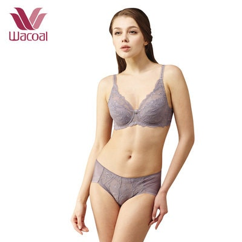
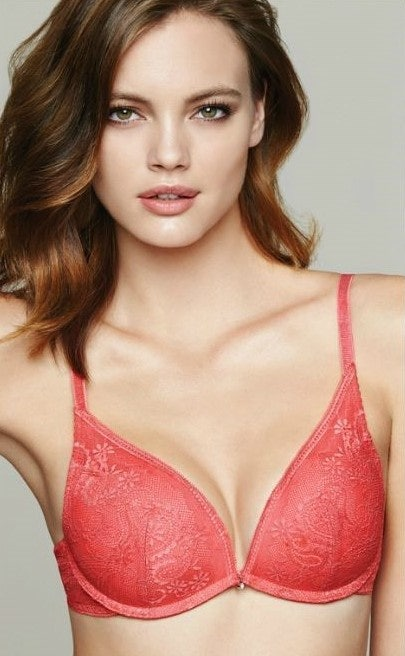
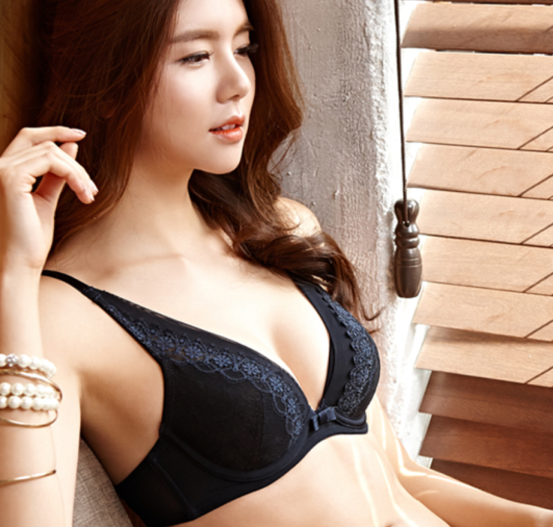
Beyond this, plenty of products are ambiguous about whether they're full or ¾ coverage. People's torso lengths differ, and a designer can freely set the cup height. I've used upper-bust volume for the examples here only because of scroll-pressure limits — there are many, many more breast shapes. In the end, the best method is for the consumer to look at the product herself and choose properly what suits her.